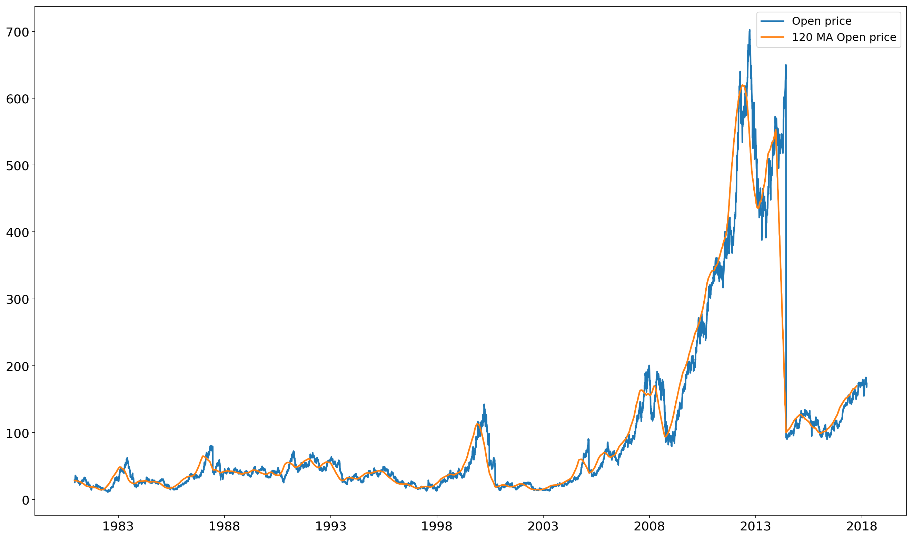

Moving average with pandas
# Import modules
import pandas as pd
from pandas_datareader import data, wb
#import packages
from pandas_datareader import data
aapl = data.DataReader('AAPL', 'quandl', '1980-01-01')
aapl.head()
| Open | High | Low | Close | Volume | ExDividend | SplitRatio | AdjOpen | AdjHigh | AdjLow | AdjClose | AdjVolume | |
|---|---|---|---|---|---|---|---|---|---|---|---|---|
| Date | ||||||||||||
| 2018-03-27 | 173.68 | 175.15 | 166.92 | 168.340 | 38962839.0 | 0.0 | 1.0 | 173.68 | 175.15 | 166.92 | 168.340 | 38962839.0 |
| 2018-03-26 | 168.07 | 173.10 | 166.44 | 172.770 | 36272617.0 | 0.0 | 1.0 | 168.07 | 173.10 | 166.44 | 172.770 | 36272617.0 |
| 2018-03-23 | 168.39 | 169.92 | 164.94 | 164.940 | 40248954.0 | 0.0 | 1.0 | 168.39 | 169.92 | 164.94 | 164.940 | 40248954.0 |
| 2018-03-22 | 170.00 | 172.68 | 168.60 | 168.845 | 41051076.0 | 0.0 | 1.0 | 170.00 | 172.68 | 168.60 | 168.845 | 41051076.0 |
| 2018-03-21 | 175.04 | 175.09 | 171.26 | 171.270 | 35247358.0 | 0.0 | 1.0 | 175.04 | 175.09 | 171.26 | 171.270 | 35247358.0 |
In order to computer the moving average, we will use the rolling function.
#120 days moving average
moving_averages = aapl[["Open" ,"High" ,"Low","Close" ,"Volume"]].rolling(window=120).mean()
moving_averages.tail()
| Open | High | Low | Close | Volume | |
|---|---|---|---|---|---|
| Date | |||||
| 1980-12-18 | 28.457667 | 28.551917 | 28.385000 | 28.385000 | 139495.000000 |
| 1980-12-17 | 28.410750 | 28.502917 | 28.338083 | 28.338083 | 141772.500000 |
| 1980-12-16 | 28.362833 | 28.453917 | 28.289167 | 28.289167 | 141256.666667 |
| 1980-12-15 | 28.335750 | 28.426833 | 28.262083 | 28.262083 | 144321.666667 |
| 1980-12-12 | 28.310750 | 28.402833 | 28.238167 | 28.238167 | 159625.000000 |
%matplotlib inline
import matplotlib.pyplot as plt
plt.plot(aapl.index, aapl.Open, label='Open price')
plt.plot(moving_averages.index, moving_averages.Open, label="120 MA Open price")
plt.legend()
plt.show()
